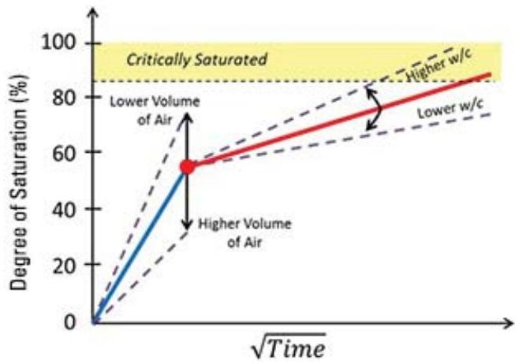
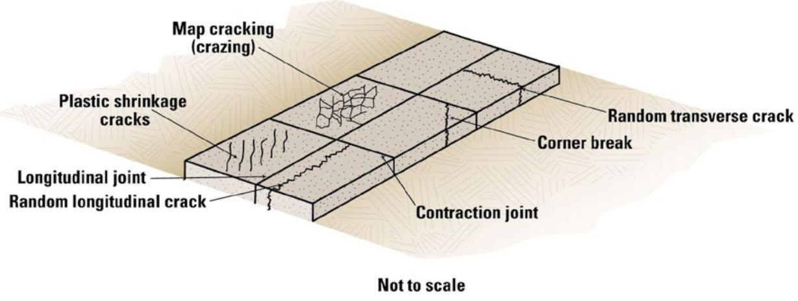
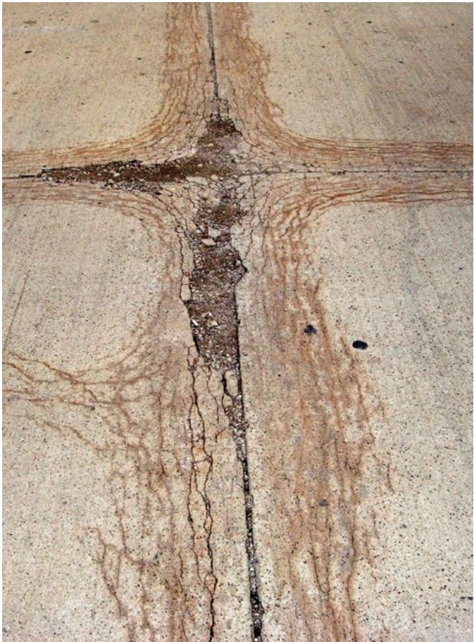

Concrete Production
Concrete production is the process of creating a durable composite material by combining cement, aggregates, water, and admixtures to form a hardened matrix. The manufacturing mechanism relies on precise mix design and curing practices to manage intrinsic properties such as drying shrinkage, thermal expansion, and moisture evaporation rates that influence early-age performance [2]. Air entrainment is frequently incorporated into the mixture to generate microscopic voids that relieve internal pressure and enhance resistance to freeze-thaw cycles [3]. Proper construction techniques, including joint spacing and moisture control, are essential for maintaining load transfer capabilities and preventing deterioration caused by saturation or chemical reactions with deicing agents [3].
Sources (4)
Key findings
- Premature joint deterioration in concrete pavements resulted from joints reaching critical saturation levels and chemical reactions between de-icing salts and paste constituents, which eroded material at joint faces [3].
- Loss of entrained air during construction, particularly due to uncontrolled vibration speeds, increased pavement vulnerability to freeze-thaw cycles [3].
- Strict vibration monitoring, optimized aggregate gradations, and greater use of slag cement enhanced freeze-thaw resistance in concrete pavements [3].
- Drying-shrinkage cracking in concrete resulted from a combination of variables including temperature, shrinkage rate, restraint, strength, modulus of elasticity, and thermal expansion [2].
- The HIPERPAV computer program quantified early-age cracking risks by generating stress histories based on mix, environmental, and construction inputs [2].
- Validation across multiple U.S. sites demonstrated that the model forecast crack formation with an accuracy of roughly five hours [2].
Joint Durability & Quality Assurance
Concrete durability relies on the interaction between its constituent materials, where air entrainment provides microscopic voids to relieve internal pressure during freeze-thaw cycles [3]. Joint performance is vulnerable to deterioration when saturation or chemical reactions with deicing salts cause material loss at crack faces [3]. Maintaining joint integrity requires standard practices such as proper spacing, the use of dowels for load transfer, and strict control of moisture content to extend pavement life [3].
The following figure illustrates the consequences of inadequate joint maintenance by showing concrete pavement with severe joint spalling.
 Concrete pavement with severe joint spalling (photo courtesy of Todd LaTorella, MO/KS ACPA) [3]
Concrete pavement with severe joint spalling (photo courtesy of Todd LaTorella, MO/KS ACPA) [3]
The image displays a concrete highway surface characterized by significant deterioration along the longitudinal joints.
Research problem — Premature joint deterioration in concrete pavements is driven by critical saturation levels and chemical reactions with de-icing salts, creating an urgent need to understand and prevent early-stage damage that compromises pavement durability [3]. Material-related distresses arise from the complex interaction between concrete constituents and aggressive environmental or chemical agents, necessitating research into how these factors undermine structural integrity and accelerate failure modes such as cracking and scaling [1]. The industry faces a dual challenge of securing alternative cementitious materials while ensuring mix uniformity, requiring robust quality assurance protocols to maintain consistent performance specifications and prevent premature failures in critical infrastructure applications [4].
The following figure illustrates a conceptual model for understanding sorption-based freeze-thaw processes in concrete.

A conceptual illustration of the sorption-based freezethaw model showing degree of saturation over time. [3]The figure plots the Degree of Saturation (%) against the square root of Time, illustrating how concrete absorbs water during a sorption process. A yellow region labeled “Critically Saturated” indicates the threshold above which freeze-thaw damage occurs. The graph distinguishes between initial absorption (blue line) and secondary sorptivity (red line), showing how factors like water-cement ratio affect the rate of saturation.
State of the art — Current concrete pavement practices utilize specific geometric configurations, such as 26-foot-wide slabs with transverse joints spaced every 20 feet and dowel bars for thicknesses of 8 inches or greater [3]. Quality assurance in airport concrete production relies on performance-based specifications supported by comprehensive quality-control programs that integrate proven mixture-design, construction, and testing practices from established industry manuals [4]. Advanced testing protocols linked to initiatives like Pavement Engineering Management are being deployed alongside novel cementitious materials to achieve long-life performance while addressing durability targets and binder shortages [4].
The following figure illustrates the specific joint details employed in these airport concrete pavement applications.
 Joint details used in airport concrete pavements (FAA 2021). [4]
Joint details used in airport concrete pavements (FAA 2021). [4]
The figure displays cross-sectional diagrams of various joint types, including contraction joints with tie bars and dowels, construction joints, and isolation joints.
Findings from the reports
- Identified premature joint deterioration in concrete pavements as primarily driven by joints reaching critical saturation and chemical reactions between de-icing salts and paste constituents [3].
- Traced earlier pavement failures to loss of entrained air during construction, particularly where vibration speed was uncontrolled, which increased vulnerability to freeze-thaw cycles [3].
- Recommended corrective measures including strict vibration monitoring, optimized aggregate gradations, and greater use of slag cement to enhance durability [3].
Novelty & rigor — The research introduces performance-based test methods that evaluate both the concrete mix and the finished pavement to enhance durability in harsh environments [2]. It incorporates real-time smoothness monitoring and stringless guidance tools to ensure consistent quality assurance during construction [2].
Reported values
| Parameter | Value | Context | Source |
|---|---|---|---|
| pavement thickness | 8 inches | Iowa DOT typical concrete pavement section (with dowels) | [3] |
| pavement width | 26 ft | Iowa DOT typical concrete pavement section | [3] |
| transverse joint spacing | 20 ft | Iowa DOT typical concrete pavement section | [3] |
Implications — Joint durability requires strict control of concrete production parameters, including adequate air entrainment and the use of durable aggregates to prevent premature deterioration [3]. Construction practices must monitor vibration during placement to preserve air content at joints and manage moisture levels to avoid damage from deicing salts [3].
The following figure illustrates how improper vibration during placement can leave visible trails in the concrete.
Vibrator trails on a concrete pavement surface. [3]
The image displays the textured surface of a concrete pavement marked by distinct, parallel lines running longitudinally along the lane.
Limitations — The observed premature deterioration of joints has been documented in a limited number of cases, primarily within the first decade after construction and specifically where deicing salts are used [3]. Because these issues appear tied to specific saturation levels and chemical interactions with paste components, the current findings may not apply universally across all regions or conditions [3].
The following figure illustrates examples of joint deterioration resulting from these chemical interactions.
 Joint deterioration (Photo courtesy of Jim Grove, FHWA) [3]
Joint deterioration (Photo courtesy of Jim Grove, FHWA) [3]
The image displays a longitudinal crack in a concrete pavement surface where the material has crumbled and spalled along the edges. This visual evidence of joint deterioration illustrates how saturation can lead to classic freeze-thaw damage or chemical reactions with deicing salts that compromise the concrete matrix.
Evidence: 4 reports (1 primary)
Early-Age Shrinkage and Cracking Mechanisms
Early-age shrinkage and cracking in concrete arise from the complex interaction between intrinsic material properties, such as mix shrinkage potential and thermal expansion, and external environmental factors like temperature and moisture evaporation rates [2]. The development of cracks is further governed by mechanical constraints, including restraint from adjacent structures, and the evolving stiffness and strength of the material during its early curing stages [2].
The following figure illustrates the phenomenon of early-age cracking resulting from these complex interactions.

Early-age cracking [2]The figure displays a schematic of a concrete pavement slab illustrating various forms of distress, including map cracking (crazing), plastic shrinkage cracks, random longitudinal and transverse cracks, corner breaks, and contraction joints.
Research problem — How can the complex interactions between temperature changes, moisture loss, and material restraint be better understood to prevent early-age drying shrinkage cracking in concrete pavements [2]? What specific mix design adjustments and testing protocols are required to mitigate premature distress caused by inadequate preparation for harsh field conditions [2]?
The following figure illustrates D-cracking, a specific form of distress resulting from these complex environmental and material interactions.

D-cracking in concrete pavement near joints. [2]The image displays a concrete surface featuring a prominent cross-shaped joint intersection with extensive, branching cracks radiating outward from the center. These cracks form a characteristic D-shape pattern near the joints, which is damage caused by expansive freezing of water in calcareous aggregate particles. This deterioration illustrates how intrinsic material properties and moisture saturation can compromise the durability of the hardened matrix created during concrete production.
State of the art — The industry has shifted toward an integrated approach that combines updated test methods, comprehensive specifications, and advanced predictive tools to ensure durable concrete pavement performance [2]. Predictive modeling of early-age cracking is now routine through software such as FHWA’s HIPERPAV, which simulates stress development during the critical first 72 hours using mix-design inputs and environmental conditions to allow engineers to adjust mixes or curing regimes before cracks manifest [2].
The following figure illustrates the type of output generated by such predictive modeling software.
 An example plot reported by HIPERPAV showing a high risk of cracking at about six hours after paving [2]
An example plot reported by HIPERPAV showing a high risk of cracking at about six hours after paving [2]
The figure displays the development of tensile stress and strength in concrete over elapsed time since construction. The plot illustrates a scenario where predicted stress exceeds allowable strength, indicating that cracking is likely.
Findings from the reports
- The HIPERPAV computer model accurately forecast early-age cracking in concrete pavements, predicting crack formation within approximately five hours of actual occurrence across multiple U.S. sites [2].
Novelty & rigor — The novelty of this approach lies in employing a comprehensive numerical model that simultaneously integrates mix design, environmental conditions, and construction variables to predict early-age drying-shrinkage cracking [2]. Reproducibility is achieved by utilizing commercially available software with a defined set of inputs for pavement design, material chemistry, environmental factors, and construction practices, allowing users to replicate the stress analysis over a specified time window [2].
Implications — Concrete production should be managed as a data-driven process where designers use predictive tools to evaluate early-age cracking risk based on mix composition, subbase characteristics, and environmental conditions [2]. When predicted stresses exceed allowable limits, the mix design or construction practices must be altered and protective measures applied to mitigate cracking [2].
Limitations — The predictive capabilities of the modelling software are constrained by its validation scope, which is limited to specific designs, materials, and climatic conditions observed at selected U.S. sites [2]. Forecasting accuracy for crack formation is restricted to an approximate five-hour precision, limiting the ability to anticipate early-age cracking with high temporal resolution [2].
Evidence: 1 report (1 primary)
Related concepts
In this hierarchy
- Parent: Pavement Management
- Sibling: Design Considerations
- Sibling: Design Methodologies
- Sibling: Pavement Design
- Sibling: Pavement Evaluation
- Sibling: Preservation Strategies
Related by shared evidence
- Aggregate Management — shares 4 reports
- Cement Chemistry — shares 4 reports
- Cementitious Materials — shares 4 reports
- Concrete Mixture Design — shares 4 reports
- Concrete Testing — shares 4 reports
- Cracking Mitigation — shares 4 reports
- Joint Maintenance — shares 4 reports
- Joint Sealing — shares 4 reports
Similar topics
- Pavement Design
- Recycling Innovation
- Maturity Methods
- Pavement Types
- Quality Control
- Construction Insights
- Pavement Design
- Overlay Technology
Source coverage
| Source | Joint Durability & Quality Assurance | Early-Age Shrinkage and Cracking Mechanisms |
|---|---|---|
| [1] | ✓ | |
| [2] | ✓ | ✓ |
| [3] | ✓ | |
| [4] | ✓ |
References
- Concrete Pavement Preservation Guide (Third Edition) (2022)
- Integrated Materials and Construction Practices for Concrete Pavement: A STATE-OF-THE-PRACTICE MANUAL (2019)
- Guide to the Prevention and Restoration of Early Joint Deterioration inConcrete Pavements (2016)
- Best Practices Manual: Quality Control and Quality Acceptance of Concrete Airport Pavement (2025)
Feedback on this page